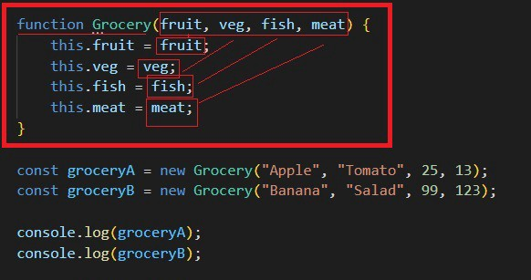
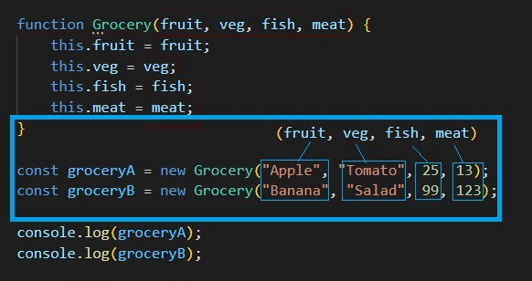

Nedir bu Constructor Method ? — Javascript OOP
Oğuzhan YÜKSELRutin olarak tekrar ettiğimiz çoğu iş için “ Keşke daha basit bir yolu olsa.†ya da “ Eee iyi de ben bunun aynısı zaten yapmıştım ? Neden tekrar tekrar her seferinde baştan aynı şeyi yapayım ki ? “ dediğimiz çok fazla zaman olmuştur.
Gerçek hayattan örnek vermek gerekirse, odamızda bulunan ışığı açmak için her gün aynı pozisyonda bulunan düğmeyi kullanıyoruz. Ancak bu düğme, yaşadığımız daire yapılırken orada değildi. Yani en başta bu iş 1 kere yapıldı, düğme yerine yerleştirildi, gerekli elektrik bağlantıları yapıldı ve evet ( Örneğimizde 2 duy ile çalışan bir düzenek olduğunu varsayalım.) işte o iki ışığı açan iki düğme yıllardır orada. Eğer ortamda daha fazla ışığa ihtiyaç varsa 2 düğmeyi aktifleştiriyoruz, değilse 1 tanesini.
Bir de bunun aksini düşünelim. Her akşam ışığı çalışır hale getirebilmek için henüz hava kararmadan gidip düğme satın alıyorsunuz, eve gelince düğmelerin önce elektrik aksamını birleştiriyor, ardından duvara gerekli montajı yapıyorsunuz. Duy ve lamba kısmından bahsetmiyorum bile… İşte bu durumun aynısı yazılımda da geçerli. Aynı işi tekrar etmek için kullanabileceğimiz, gerekli durumda da miktar gibi farklı değişkenleri değiştirebileceğimiz bir yapı bu Constructor yani Yapıcı Metotlar.
Grocery → Yapıcı Metodumuzun adı, BÜYÜK HARF İLE BAŞLAMALI!
Detay 1: Örnekte görüleceği üzere, yapıcı metotları aynı fonksiyonlar gibi tanımlıyoruz. Tek farkla, metodumuzun adı Büyük Harf ile başlamalı. Zaten küçük ile başlarsa fonksiyon oluyor. Büyük olunca da Yapıcı Metot.
Detay 2: Normalde yani Global Scopeta “ this “ anahtar kelimesi bize WINDOW’u karşılıyor. Ancak burada görüldüğü üzere this anahtar kelimesi, içinde bulunduğu function’ı tanımlıyor.
Detay 3: Kırmızı ile birbirini işaret eden kelimelere dikkat edin. this.fruit = fruit; this.veg = veg; this.fish = fish;
Burada kafanız karışmasın. Neden 2 adet fish, veg, fruit vs kullandık ? + 1.fish bizim kendi kullanımımız için atadığımız isim. ( Burada fish yerine x,y,z veya sen,ben,o gibi istediğimiz değeri atayabilirdik. ) + 2.fish ise ( yani kırmızı dikdörtgen içinde olanlar ) yapıcı metoda ait olan değer. Parantez içindeki ve eşittirin sağındaki değerler aynı olmalı.Bu kısımda, lamba örneğimize atıf yaparsak, dairenin ilk inşaat aşamasında priz gerekli yere montaj edildi. Artık özgürce istediğimiz kadar kullanabiliriz. Ama hangi sıklıkla ? 2 ışık birden mi açık olacak ? Yoksa tek ışık mı ?
Atama yaparken “new†anahtar kelimesi ile yapıcı metodu çağırıyoruz.
Daha önceden oluşturduğumuz yapıcı metoda ilerde kullanabilmek için bazı özellikler tanımlıyoruz. Mavi dikdörtgen içinde atama sırasına göre hangi değerin, hangi değişkeni referans aldığını görebilirsiniz.
Durumu içselleştirebilmek adına burada da iki adet duy’umuza istediğimiz 2 renkte lamba taktığımızı düşünebiliriz :) Biri sarı, diğeri beyaz olsun. Şu an her şey hazır. Priz, elektrik aksamı, duy, lambalar. Geriye yalnızca ışığı yakmak kaldı.
Bu örnekte basit bir console.log() fonksiyonu ile ışığımızı yaktığımızı düşünebilirsiniz. Ancak pek tabii kullanım alanı bizlere kalmış… Kod, müzik ve sağlıkla kalın :)